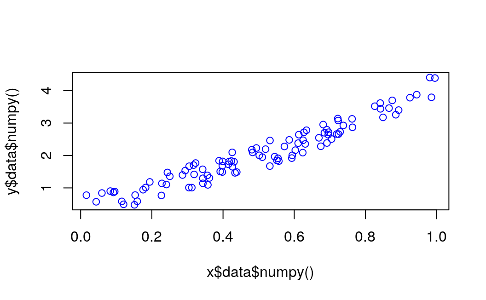

Chapter 6 Simple linear regression
6.1 Introduction
6.2 Generate the dataset
Before you start the training process, you need to know our data. You make a random function to test our model. \(Y = x3 sin(x)+ 3x+0.8 rand(100)\)
np$random$seed(123L)
x = np$random$rand(100L)
y = np$sin(x) * np$power(x, 3L) + 3L * x + np$random$rand(100L) * 0.8
plot(x, y)
6.3 Convert arrays to tensors
Before you start the training process, you need to convert the numpy array to Variables that supported by Torch and autograd.
6.4 Converting from numpy to tensor
Notice that before converting to a Torch tensor, we need first to convert the R numeric vector to a numpy array:
# convert numpy array to tensor in shape of input size
x <- r_to_py(x)
y <- r_to_py(y)
x = torch$from_numpy(x$reshape(-1L, 1L))$float()
y = torch$from_numpy(y$reshape(-1L, 1L))$float()
print(x, y)
#> tensor([[0.6965],
#> [0.2861],
#> [0.2269],
#> [0.5513],
#> [0.7195],
#> [0.4231],
#> [0.9808],
#> [0.6848],
#> [0.4809],
#> [0.3921],
#> [0.3432],
#> [0.7290],
#> [0.4386],
#> [0.0597],
#> [0.3980],
#> [0.7380],
#> [0.1825],
#> [0.1755],
#> [0.5316],
#> [0.5318],
#> [0.6344],
#> [0.8494],
#> [0.7245],
#> [0.6110],
#> [0.7224],
#> [0.3230],
#> [0.3618],
#> [0.2283],
#> [0.2937],
#> [0.6310],
#> [0.0921],
#> [0.4337],
#> [0.4309],
#> [0.4937],
#> [0.4258],
#> [0.3123],
#> [0.4264],
#> [0.8934],
#> [0.9442],
#> [0.5018],
#> [0.6240],
#> [0.1156],
#> [0.3173],
#> [0.4148],
#> [0.8663],
#> [0.2505],
#> [0.4830],
#> [0.9856],
#> [0.5195],
#> [0.6129],
#> [0.1206],
#> [0.8263],
#> [0.6031],
#> [0.5451],
#> [0.3428],
#> [0.3041],
#> [0.4170],
#> [0.6813],
#> [0.8755],
#> [0.5104],
#> [0.6693],
#> [0.5859],
#> [0.6249],
#> [0.6747],
#> [0.8423],
#> [0.0832],
#> [0.7637],
#> [0.2437],
#> [0.1942],
#> [0.5725],
#> [0.0957],
#> [0.8853],
#> [0.6272],
#> [0.7234],
#> [0.0161],
#> [0.5944],
#> [0.5568],
#> [0.1590],
#> [0.1531],
#> [0.6955],
#> [0.3188],
#> [0.6920],
#> [0.5544],
#> [0.3890],
#> [0.9251],
#> [0.8417],
#> [0.3574],
#> [0.0436],
#> [0.3048],
#> [0.3982],
#> [0.7050],
#> [0.9954],
#> [0.3559],
#> [0.7625],
#> [0.5932],
#> [0.6917],
#> [0.1511],
#> [0.3989],
#> [0.2409],
#> [0.3435]])6.5 Creating the network model
Our network model is a simple Linear layer with an input and an output shape of one.
And the network output should be like this
Net(
(hidden): Linear(in_features=1, out_features=1, bias=True)
)py_run_string("import torch")
main = py_run_string(
"
import torch.nn as nn
class Net(nn.Module):
def __init__(self):
super(Net, self).__init__()
self.layer = torch.nn.Linear(1, 1)
def forward(self, x):
x = self.layer(x)
return x
")
# build a Linear Rgression model
net <- main$Net()
print(net)
#> Net(
#> (layer): Linear(in_features=1, out_features=1, bias=True)
#> )6.6 Optimizer and Loss
Next, you should define the Optimizer and the Loss Function for our training process.
6.7 Training
Now let’s start our training process. With an epoch of 250, you will iterate our data to find the best value for our hyperparameters.
# x = x$type(torch$float) # make it a a FloatTensor
# y = y$type(torch$float)
# x <- torch$as_tensor(x, dtype = torch$float)
# y <- torch$as_tensor(y, dtype = torch$float)
inputs = Variable(x)
outputs = Variable(y)
# base plot
plot(x$data$numpy(), y$data$numpy(), col = "blue")
for (i in 1:250) {
prediction = net(inputs)
loss = loss_func(prediction, outputs)
optimizer$zero_grad()
loss$backward()
optimizer$step()
if (i > 1) break
if (i %% 10 == 0) {
# plot and show learning process
# points(x$data$numpy(), y$data$numpy())
points(x$data$numpy(), prediction$data$numpy(), col="red")
# cat(i, loss$data$numpy(), "\n")
}
}
6.8 Results
As you can see below, you successfully performed regression with a neural network. Actually, on every iteration, the red line in the plot will update and change its position to fit the data. But in this picture, you only show you the final result.